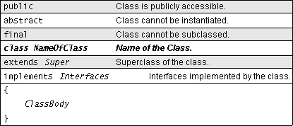

Feedback Form
|
|
Start of Tutorial > Start of Trail > Start of Lesson |
Search
Feedback Form |
The left side of the following diagram shows the possible components of a class declaration in the order they should or must appear in your class declaration. The right side describes their purposes. The required components are the class keyword and the class name and are shown in bold. All the other components are optional, and each appears on a line by itself (thus "extends Super" is a single component). Italics indicates an identifier such as the name of a class or interface. If you do not explicitly declare the optional items, the Java compiler assumes certain defaults: a nonpublic, nonabstract, nonfinal subclass of Object that implements no interfaces. The following list provides a few more details about each class declaration component. It also provides references to sections later in this trail that talk about what each component means, how to use each, and how it affects your class, other classes, and your Java program.
public- By default, a class can be used only by other classes in the same package. The public modifier declares that the class can be used by any class regardless of its package. Look in Creating and Using Packages
for information about how to use modifiers to limit access to your classes and how it affects your access to other classes.
abstract- Declares that the class cannot be instantiated. For a discussion about when abstract classes are appropriate and how to write them, see Writing Abstract Classes and Methods
final- Declares that the class cannot be subclassed. Writing Final Classes and Methods
class NameOfClass- The
classkeyword indicates to the compiler that this is a class declaration and that the name of the class isNameOfClass.extends Super- The
extendsclause identifiesSuperas the superclass of the class, thereby inserting the class within the class hierarchy.How Do These Concepts Translate into Code?
Appletand talked briefly about the responsibilities and benefits of subclasses. Managing Inheritanceimplements Interfaces- To declare that your class implements one or more interfaces, use the keyword implements followed by a comma-separated list of the names of the interfaces implemented by the class. How Do These Concepts Translate into Code?
ClickMeapplet implements an interface. Details about writing your own interfaces and how to use them can be found in Creating Interfaces
|
|
Start of Tutorial > Start of Trail > Start of Lesson |
Search
Feedback Form |